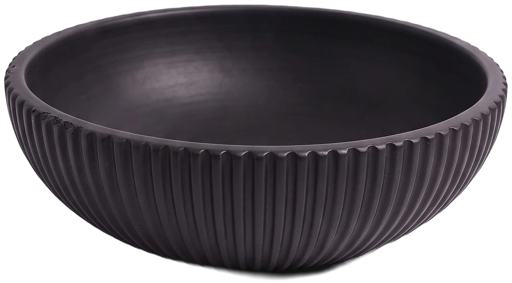
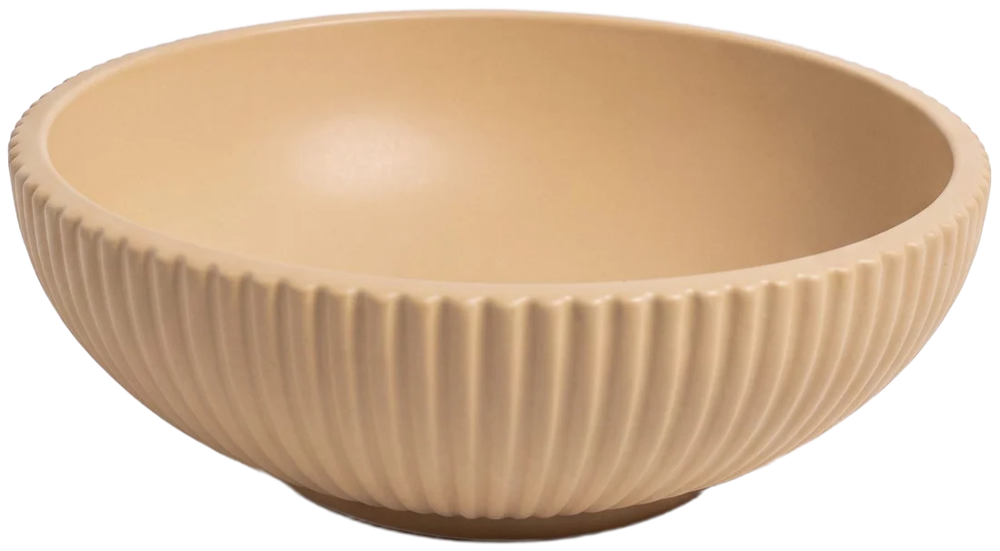

Sortie de cadre
La photo d'ambiance est dans un cadre, et la bougie en sort : elle déborde du bas et des côtés, avec son ombre. Au défilement et à la souris, la bougie bouge un peu plus que la photo.
Coulées, poncées, parfumées à la main.
Bougies à la cire perlée et objets en jesmonite, en six teintes. Parfums de Grasse, cire d'origine végétale.


L'étagère
Les pièces sont posées sur une étagère vue en perspective, comme dans une vitrine : la bougie allumée devant, le plateau et le pot plus loin, un peu plus petits et flous. La profondeur vient des côtés, mais rien ne flotte.



La bougie qui se compose
Faites défiler doucement : le pot vide se remplit de cire perlée, puis la bougie s'allume et le fond se réchauffe. L'ouverture explique le principe de la cire perlée en quelques secondes.
Un pot coulé à la main
En jesmonite, dans six teintes.
On verse la cire perlée
Une cire d'origine végétale, parfumée à Grasse.
Une mèche, une flamme
Et la pièce s'éclaire doucement.

La lumière
Fond sombre et une seule bougie allumée, dont la lueur éclaire le titre. Sur ordinateur, la bougie suit la souris comme si on la tenait à la main ; sur téléphone, elle se balance doucement toute seule.
Coulées, poncées, parfumées à la main.
Bougez la souris dans ce cadre.